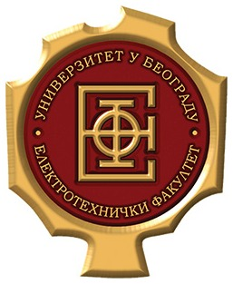

School of Electrical Engineering, University of Belgrade — Software Engineering (M.Sc.)
GPA 9.67. Coursework focused on big data processing, cyber security, UI programming, and social network analysis. Thesis (August 2025): "Analysis of trends in world cinematography in the early 21st century" — network analysis of actor, director, and production-company collaboration across two decades of film data. The second year ran alongside my first role at GDi Solutions, so I learned to balance research and production work.
- Thinking about data at scale — designing analyses for datasets far too large to inspect by hand (~1.8M titles in my thesis), the same mindset I bring to platform databases and migrations.
- Security as a design decision, not an afterthought — hands-on work fixing SQL injection, XSS and CSRF in a Spring Boot application shapes how I build authentication and authorization today.
- UI programming fundamentals — component design, state and interaction patterns that later fed directly into designing a UI component library from scratch.
- Owning a project end to end — my thesis meant framing the question, collecting data through APIs and scraping, choosing methods, and presenting results clearly to a committee.
School of Electrical Engineering, University of Belgrade — Computer Engineering & Information Technology (B.Sc.)
GPA 8.18. Four years covering the whole computing stack — from logic circuits and microcode up to compilers, operating systems and web applications. Graduated in September 2023 with a thesis on machine learning for diabetes detection — comparing classification models on a dataset of 100,000 samples.
- How software really runs — I built a multi-threaded kernel, a compiler, and an assembler, linker and emulator, so threads, memory and build tools are not black boxes to me.
- Solid engineering fundamentals — algorithms and data structures, and object-oriented design in C++ and Java, the base I still rely on when making architecture decisions.
- How a full application fits together — my first full-stack project (MEAN) with roles, authentication and search showed me how frontend, API and database connect.
- Learning fast under deadlines — nearly every course meant a new language, toolchain or domain, exactly what working on an evolving enterprise platform demands.
- Data and machine learning foundations — from implementing KNN and linear regression from scratch to a thesis on handling imbalanced medical data.

Petnica Science Center — Applied Physics & Electronics
Attended the technical seminar in the first year of high school, then an applied physics and electronics class two years later — hands-on project, electronics, and programming work. First year: a laser communication project; second year: classifying and detecting lymphoblast cells from an image.
- An early taste of real research: forming a hypothesis, building a working prototype, and defending results in front of experienced scientists.
- My first serious programming outside of school — image processing to detect and classify cells — and the curiosity that led me to engineering.
First Grammar School, Kragujevac
Class for gifted students in Math and Science, finished with honors — enrolled in the seventh grade of elementary school, following the Mathematical Grammar School curriculum. Led an applied physics and electronics club, competing in physics, math, and programming, with appearances at the Belgrade Science Fair (three years running) and the Vienna Maker Faire.
- An analytical, math-first way of breaking down problems that I still use when debugging or designing systems.
- Leading a student club taught me to organize projects, work in a team, and explain technical work to a non-technical audience at public fairs.